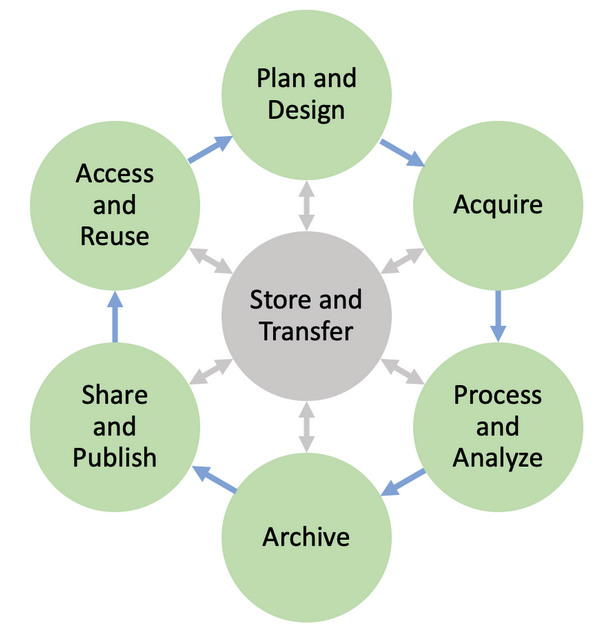
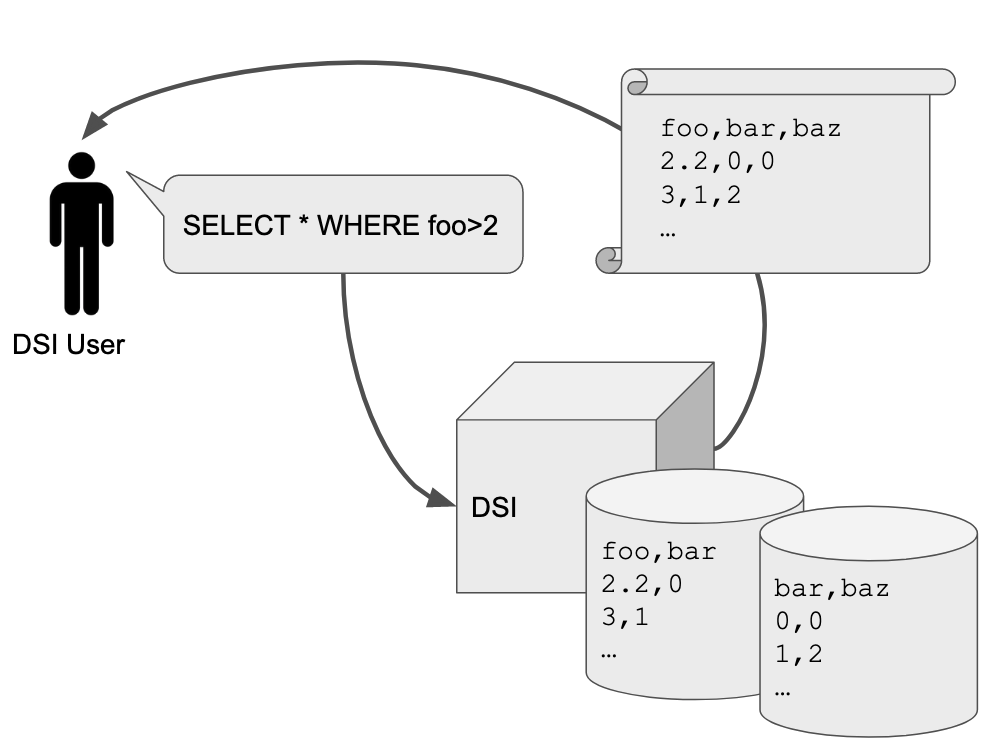

Introduction
The goal of the Data Science Infrastructure Project (DSI) is to manage data through metadata capture and curation. DSI capabilities can be used to develop workflows to support management of simulation data, AI/ML approaches, ensemble data, and other sources of data typically found in scientific computing.
- DSI infrastructure is designed to be flexible and with these considerations in mind:
Data management is subject to strict, POSIX-enforced, file security.
DSI capabilities support a wide range of common metadata queries.
DSI interfaces with multiple database technologies and archival storage options.
Query-driven data movement is supported and is transparent to the user.
The DSI API can be used to develop user-specific workflows.
{kind=link}

A depiction of data life cycle can be seen here. The DSI API supports the user to manage the life cycle aspects of their data.
DSI system design has been driven by specific use cases, both AI/ML and more generic usage. These use cases can often be generalized to user stories and needs that can be addressed by specific features, e.g., flexible, human-readable query capabilities. DSI uses Object Oriented design principles to encourage modularity and to support contributions by the user community. The DSI API is Python-based.
Implementation Overview
The DSI API is broken into three main categories:
Plugins: these are frontend capabilities that will be commonly used by the generic DSI user. These include readers and writers.
Backends: these are used to interact with storage devices and other ways of moving data.
DSI Core: the middleware that contains the basic functionality to use the DSI API.
Plugin Abstract Classes
Plugins transform an arbitrary data source into a format that is compatible with the DSI core. The parsed and queryable attributes of the data are called metadata – data about the data. Metadata share the same security profile as the source data.
Plugins can operate as data readers or data writers.
A simple data reader might parse an application’s output file and place it into a core-compatible data structure such as Python built-ins and members of the popular Python collection module.
A simple data writer might execute an application to supplement existing data and queryable metadata, e.g., adding locations of outputs data or plots after running an analysis workflow.
Plugins are defined by a base abstract class, and support child abstract classes which inherit the properties of their ancestors.
Currently, DSI has the following readers:

Figure depicting the current DSI plugin class hierarchy.
Backend Abstract Classes
Backends are an interface between the core and a storage medium. Backends are designed to support a user-needed functionality. Given a set of user metadata captured by a DSI frontend, a typical functionality needed by DSI users is to query that metadata by SQL query. Because the files associated with the queryable metadata may be spread across filesystems and security domains, a supporting backend is required to assemble query results and present them to the DSI core for transformation and return.
{kind=link}

In this typical user story, the user has metadata about their data stored in DSI storage of some type. The user needs to extract all files with the variable foo above a specific threshold. DSI backends query the DSI metadata store to locate and return all such files.
Current DSI backends include:
SQLite: Python based SQL database and backend; the default DSI API backend.
GUFI: the Grand Unified File Index system ; developed at LANL. GUFI is a fast, secure metadata search across a filesystem accessible to both privileged and unprivileged users.
Parquet: a columnar storage format for Apache Hadoop.
DSI Core
DSI basic functionality is contained within the middleware known as the core. The DSI core is focused on delivering user-queries on unified metadata which can be distributed across many files and security domains. DSI currently supports Linux, and is tested on RedHat- and Debian-based distributions. The DSI core is a home for DSI Plugins and an interface for DSI Backends.